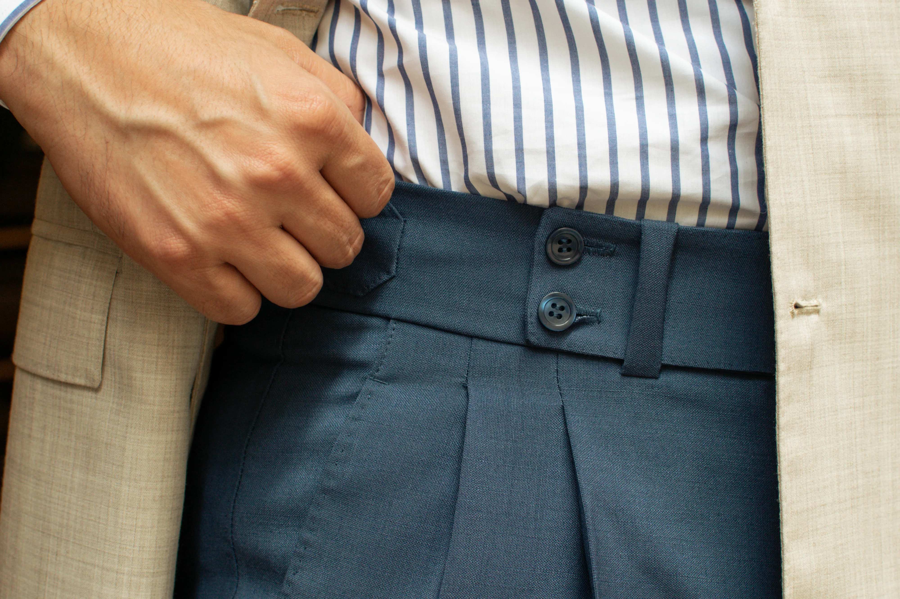

Francisco Gómez
About
He took his first steps in this magnificent craft in early 2004 in his hometown, specializing in the development of tailored patterns for each client. His constant study of body shapes and garment morphology earned him recognition for his skills and extreme meticulousness in every garment he created.
Upon arriving in Buenos Aires, it didn't take long for him to start surrounding himself with great Italian and Spanish master tailors. They contributed to his knowledge as a self-taught individual and immediately acknowledged him as a colleague within the profession due to his high level of excellence. This recognition paved the way for his significant work as a craftsman in the tailoring field.
His creative approach to the craft, his expertise, and his unique style made him an authentic reference in artisanal tailoring. This recognition gradually gained prominence from 2012 when he decided to establish his own brand, "Franciscano Sastre." At that time, the brand already had a marked profile of authenticity in the craft, cultivated with respect, hard work, and innovation, while always maintaining the ancient rules of craftsmanship passed down by his masters.


Francisco Gómez, also known as Franciscano, embodies the spirit of this new perspective in the business of men's fashion in Argentina. He personally oversees every operation of his tailoring business, which is already making strides towards international recognition.
His exclusive atelier is located in a Historical Heritage building in Buenos Aires, Argentina, in a space spanning over 200 square meters. The place becomes an authentic journey through time on the prestigious Calle Esmeralda at 984. Access is by appointment only, and clients are personally attended to by Francisco.
His ongoing exchanges with renowned tailors worldwide and his travels abroad, including participation in the world's most significant men's fashion fair, Pitti Uomo, in Florence, Italy, where he was fortunate to be the first Argentine tailor to participate in 2016, have allowed him to refine his skills. Since then, he has become the most recognized tailor in Argentine society and the region. Currently, he is the founding President of the prestigious Argentine Tailoring Association. This organization was formed with leading colleagues in the profession who are true artisans in their craft and has significant potential for the true pioneers of this captivating profession.
Among his recent international achievements, it's worth mentioning the reproduction of the military uniform worn by General José Francisco de San Martín. This authentic masterpiece is displayed in the historical museum of Yapeyú in the province of Corrientes, the birthplace of the great father of the Argentine nation. The work stands as a testament to the high level of perfection evident in the meticulous details.

{kind=link}
{kind=link}